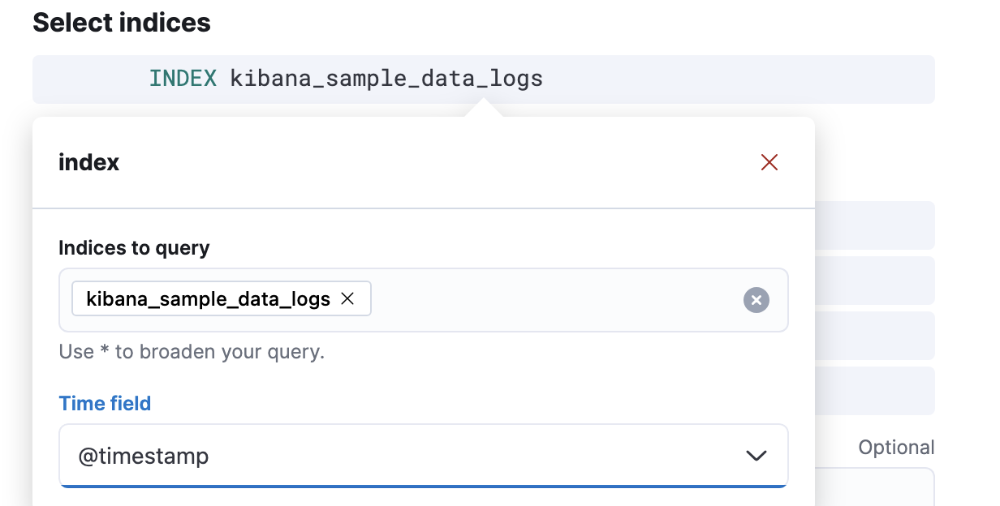
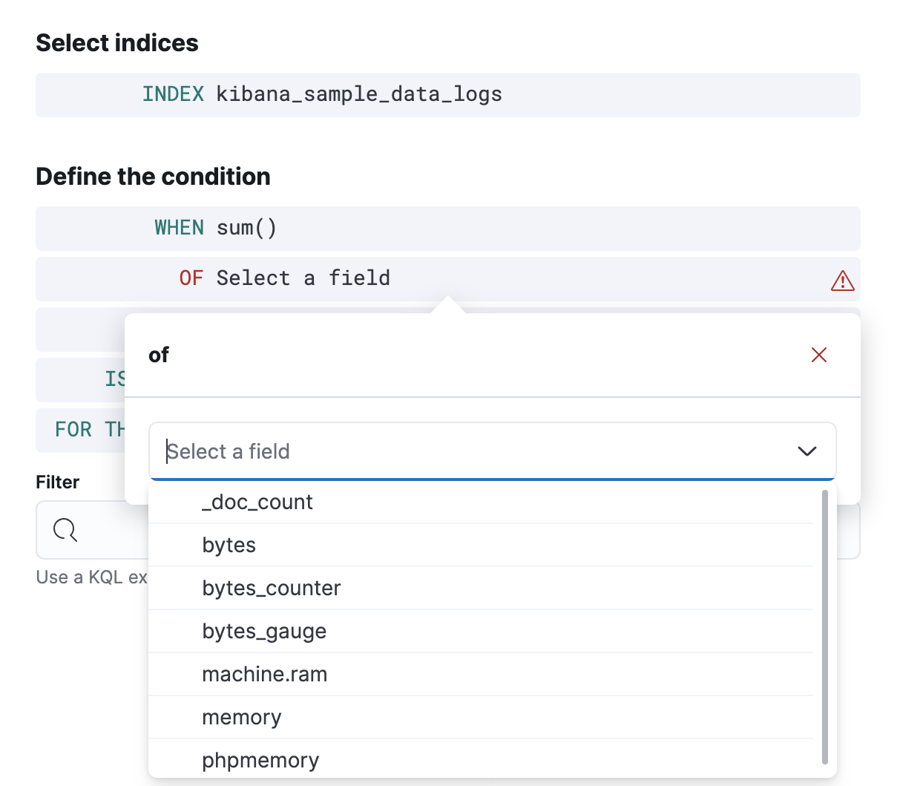
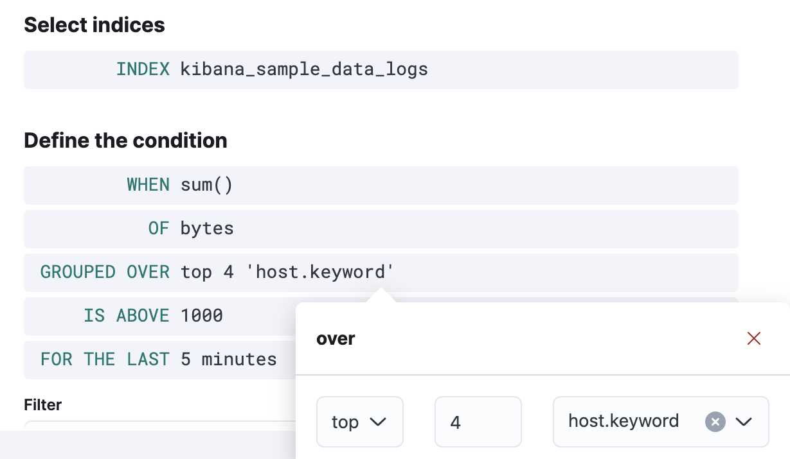
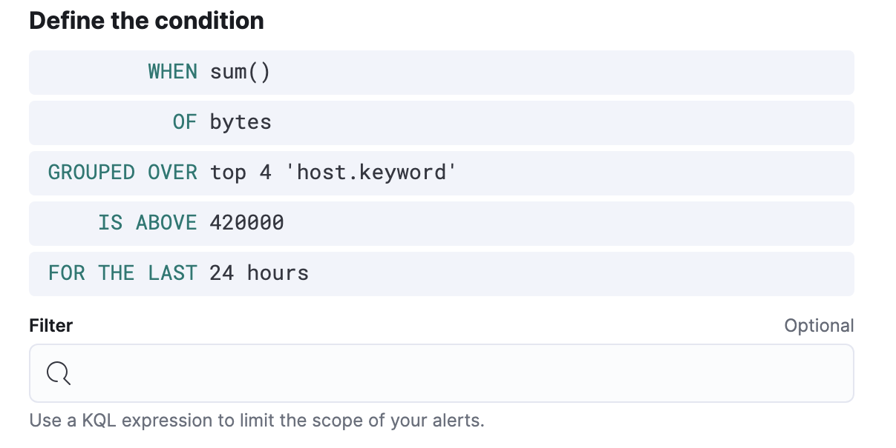

Index thresholdedit
The index threshold rule type runs an Elasticsearch query. It aggregates field values from documents, compares them to threshold values, and schedules actions to run when the thresholds are met.
Rule conditionsedit
When you create an index threshold rule, you must define the conditions for the rule to detect. For example:
- Select an index
-
- Index
- Specify the indices to query and a time field that will be used for the time window.
- When
-
Specify how to calculate the value that is compared to the threshold. The value is calculated by aggregating a numeric field in a time window. The aggregation options are:
count,average,sum,min, andmax. When usingcountthe document count is used and an aggregation field is not necessary. - Over/Grouped Over
- Specify whether the aggregation is applied over all documents or split into groups using a grouping field. If grouping is used, an alert will be created for each group when it exceeds the threshold. To limit the number of alerts on high cardinality fields, you must specify the number of groups to check against the threshold. Only the top groups are checked.
- Define the condition
-
This section defines a threshold value and a comparison operator (
is above,is above or equals,is below,is below or equals, oris between). The result of the aggregation is compared to this threshold. It also defines a time window, which determines how far back to search for documents, using the time field set in the index clause. Generally this value should be a value higher than the check interval to avoid gaps in detection.
If data is available and all clauses have been defined, a preview chart will render the threshold value and display a line chart showing the value for the last 30 intervals. This can provide an indication of recent values and their proximity to the threshold, and help you tune the clauses.
Action variablesedit
The following action variables are specific to the index threshold rule. You can also specify variables common to all rules.
-
context.conditions -
A description of the threshold condition. Example:
count greater than 4 -
context.date -
The date, in ISO format, that the rule met the threshold condition. Example:
2020-01-01T00:00:00.000Z. -
context.group -
The name of the action group associated with the threshold condition. Example:
threshold met. -
context.message -
A preconstructed message for the rule. Example:
rule 'kibana sites - high egress' is active for group 'threshold met':
- Value: 42
- Conditions Met: count greater than 4 over 5m
- Timestamp: 2020-01-01T00:00:00.000Z -
context.title -
A preconstructed title for the rule. Example:
rule kibana sites - high egress met threshold. -
context.value - The value for the rule that met the threshold condition.
Exampleedit
In this example, you will use the Kibana sample weblog data set to set up and tune the conditions on an index threshold rule. For this example, you want to detect when any of the top four sites serve more than 420,000 bytes over a 24 hour period.
- Open the main menu, then click Stack Management > Rules.
-
Create a new rule.
-
Provide a rule name and select the Index threshold rule type.

-
Select an index. Click Index, and set Indices to query to
kibana_sample_data_logs. Set the Time field to@timestamp. -
To detect the number of bytes served during the time window, click When and select
sumas the aggregation, andbytesas the field to aggregate. -
To detect the four sites that have the most traffic, click Over and select
top, enter4, and selecthost.keywordas the field. -
Define the condition. To trigger the rule when any of the top four sites exceeds 420,000 bytes over a 24 hour period, select
is aboveand enter420000. Then click For the last, enter24, and selecthours. -
Schedule the rule to check every four hours.

The preview chart will render showing the 24 hour sum of bytes at 4 hours intervals (the check interval) for the past 120 hours (the last 30 intervals).
- Change the time window and observe the effect it has on the chart. Compare a 24 window to a 12 hour window. Notice the variability in the sum of bytes, due to different traffic levels during the day compared to at night. This variability would result in noisy rules, so the 24 hour window is better. The preview chart can help you find the right values for your rule.
-
Define the actions for your rule.
You can add one or more actions to your rule to generate notifications when its conditions are met and when they are no longer met. For each action, you must select a connector, set the action frequency, and compose the notification details. For example, add an action that uses a server log connector to write an entry to the Kibana server log:

The index threshold rule does not support alert summaries; therefore they do not appear in the action frequency options.
The unique action variables that you can use in the notification are listed in Action variables. For more information, refer to Actions and Connectors.
- Save the rule.
-
-
Find the rule and view its details in Stack Management > Rules. For example, you can see the status of the rule and its alerts:
- Delete or disable this example rule when it’s no longer useful. In the detailed rule view, select Delete rule from the actions menu.